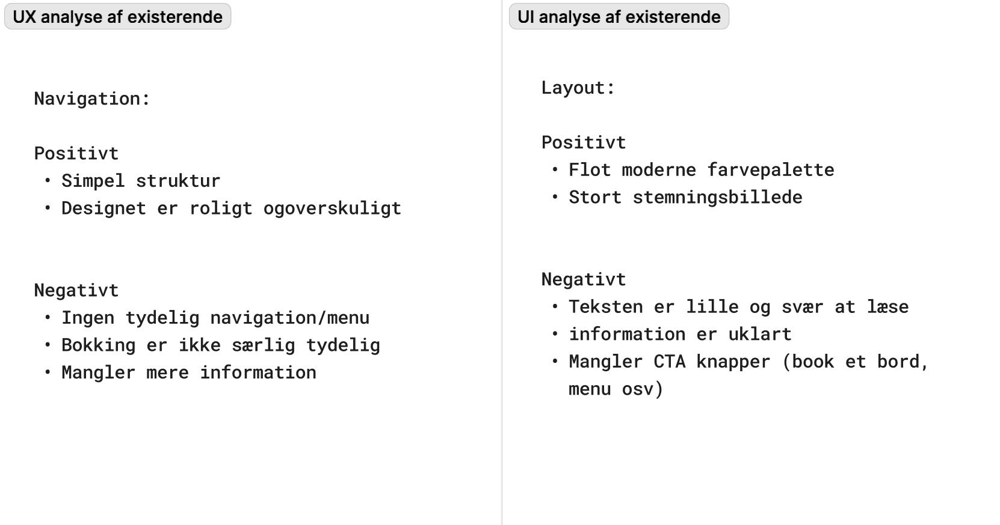
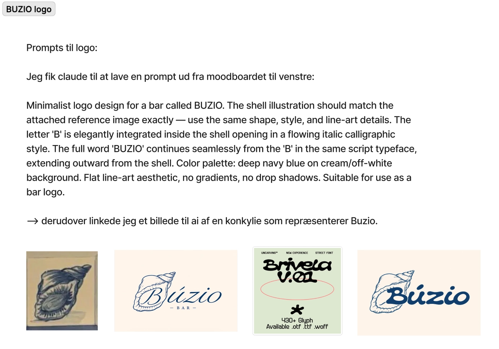
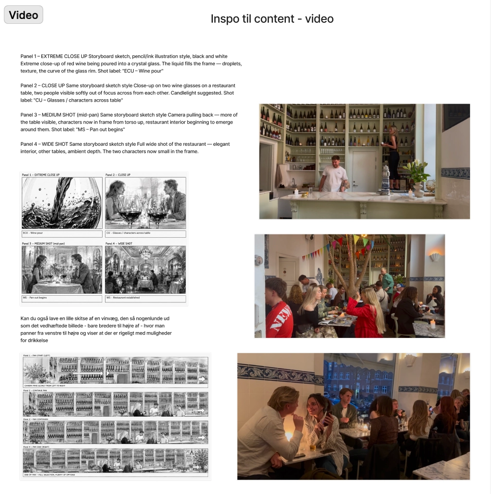
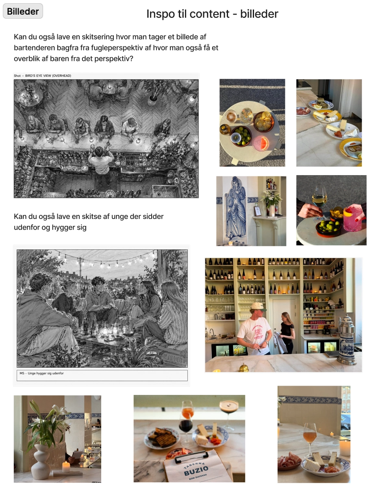
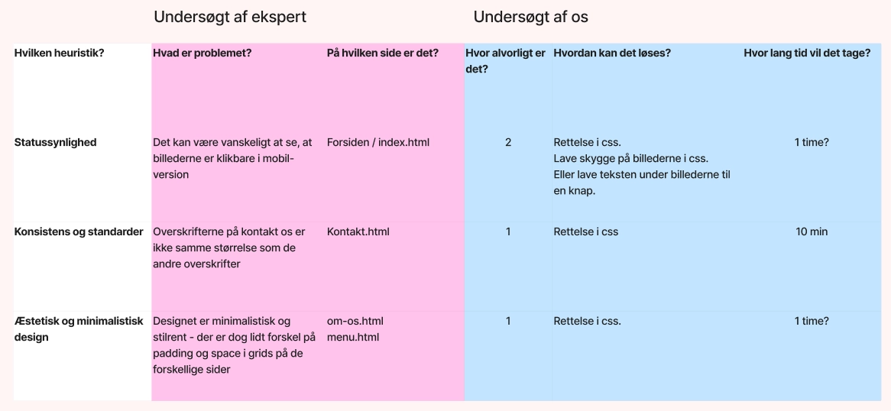

I Tema 5 arbejdede vi med indholdsproduktion og redesign af en eksisterende virksomheds hjemmeside. Opgaven bestod i at analysere en virksomhed, producere nyt indhold og udvikle et redesign, der forbedrede både brugeroplevelsen og det visuelle udtryk. Vores case var vinbaren Búzio Taberna.

Virksomhedssite:
Vi redesignede Búzio Tabernas hjemmeside med fokus på at skabe et mere overskueligt, moderne og stemningsfuldt website. Vi udviklede en ny visuel identitet med farvepalette, logo, egne billeder og et responsivt design til både mobil og desktop. Derudover kodede vi det færdige website og optimerede det med Lighthouse.
Se projektProces:
Vi startede projektet med research og analyse af Búzios eksisterende hjemmeside for at finde ud af, hvad der fungerede godt, og hvad der kunne forbedres. I processen lavede vi blandt andet virksomhedens før og efter indsigter, deres ønsker
og forventninger til redesignet samt udtryk og indhold. På baggrund af vores research udviklede vi moodboards, logoidéer, farver og wireframes, som dannede grundlag for den visuelle retning.
Som en del af indholdsproduktionen besøgte vi Búzio, hvor vi tog vores egne billeder og udviklede idéer til videomateriale, der kunne understøtte stedets stemning og identitet. Herefter designede vi hi-fi prototyper og kodede den færdige
løsning. Til sidst testede vi hjemmesiden og foretog de sidste justeringer på baggrund af feedback og testresultater.





Hvad har jeg lært?
Jeg lærte at arbejde med en rigtig virksomhed og omsætte research til konkrete designbeslutninger. Gennem brugerundersøgelser og tests blev jeg bedre til at begrunde mine designvalg frem for kun at designe ud fra egne præferencer. Jeg fik også erfaring med indholdsproduktion, herunder fotografering og billedredigering, og lærte hvordan visuelt indhold kan være med til at formidle en virksomheds identitet og stemning. Derudover blev jeg bedre til samarbejde, GitHub og udvikling af et responsivt website fra idé til færdig løsning.